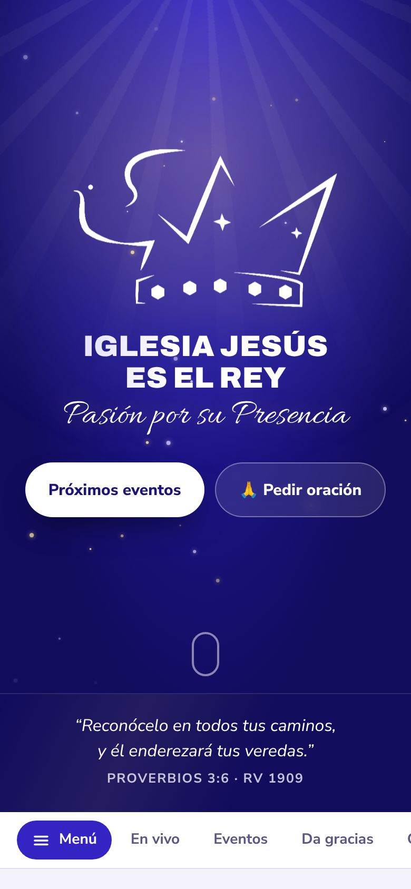

Fe.Esperanza.Caridad.
“Y ahora permanecen la fe, la esperanza, y la caridad, estas tres.”1 Corintios 13:13 · RV 1909
Tu iglesia.
En tu bolsillo.
Todo lo que necesitas para vivir tu fe durante la semana.

Cultos en vivoFacebook Live y Zoom, a un toque desde tu casa.
Peticiones de oraciónAnónimas o con tu nombre. Llegan directo a los pastores.
La Biblia completaLee cualquier libro y capítulo, cuando quieras.
EventosAgrégalos a tu calendario y compártelos por WhatsApp.
Ofrendas por SINPEDa tu ofrenda desde el celular, de forma sencilla.
Se instala como appCon el ícono de la iglesia en tu pantalla de inicio.
Jehová es mi pastor; nada me faltará.
Salmos 23:1 · RV 1909Una familia que se encuentra.
Durante toda la semana, no solo el domingo.
En vivoLos cultos donde estés.
EventosLo que viene en la iglesia.
OraciónOramos por ti.
Da graciasLo compartimos el domingo.
BibliaLa Palabra siempre contigo.
Fotos y videosLo que vivimos juntos.
EncuestasTu opinión cuenta.
UbicaciónLlega con Maps o Waze.
Te esperamos.
Hay un lugar para ti en esta familia. Ven tal como eres.
Entra.
Hay lugar para ti.
Abre la app de la iglesia, mira los próximos eventos o déjanos tu petición de oración.